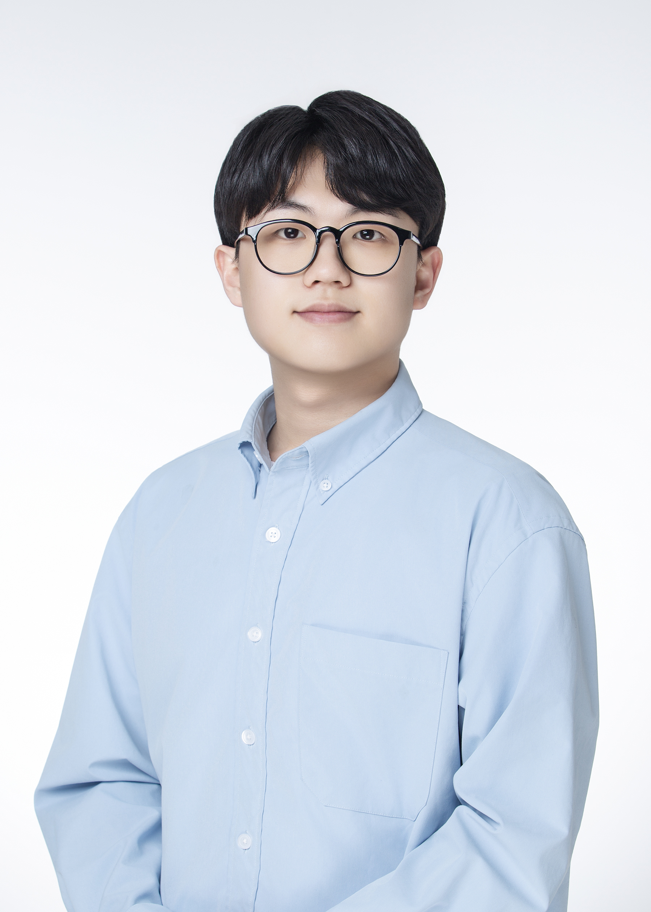
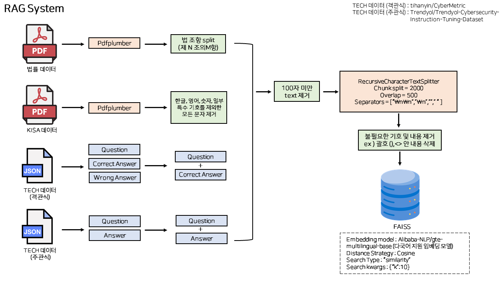
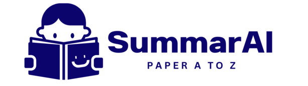
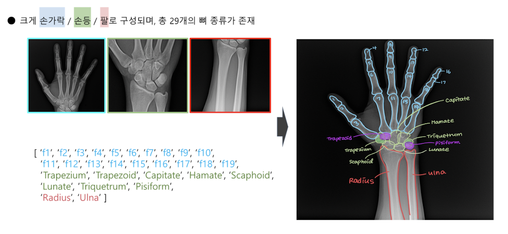
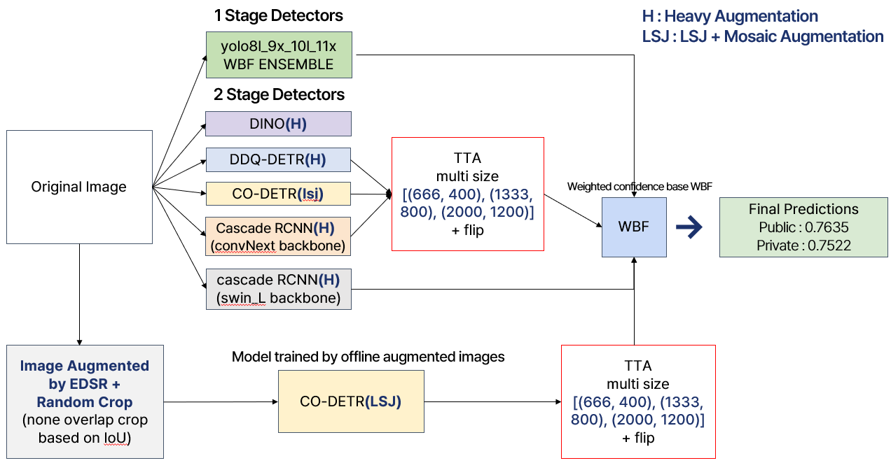

Inha University
Mar 2020 – Aug 2026
B.S. in Information and Communication Engineering
GPA 3.75 / 4.5 (Major 3.79 / 4.5)
I am an undergraduate student in Information and Communication Engineering at Inha University. Currently, I am an AI Engineer Intern in the Physical Intelligence Lab at LG AI Research.
Previously, I worked on diffusion-based generative models at the Generative Computing Lab, advised by Prof. Namhyuk Ahn, and completed the Naver Boostcamp AI Tech program with a focus on computer vision.
My research interests include multimodal learning, world models, and diffusion models.

TL;DR: A training-free framework that improves compositional text-to-image generation by grounding LLM-synthesized layouts and reranking candidates with an object-centric VLM judge at inference time.
Building a VLM-based defect-inspection pipeline for manufacturing through data-centric refinement and supervised fine-tuning.
Research on diffusion models and generative AI across diverse domains.
Intensive AI program focused on computer vision, ranking 1st in two of its competitions.

Advanced RAG system for financial security QA built on KT Mi:dm 11.5B — FAISS retrieval, reranking, and self-consistency validation. Winner of the Financial Security Institute's Financial AI Challenge.
code
End-to-end PDF understanding pipeline (formulas, tables, figures) with an advanced RAG stack — HyDE, query refinement, and reranking — scoring 0.75 on the Allganize Korean RAG benchmark.
code
Medical X-ray semantic segmentation with UNet++ and custom encoder backbones, boosting the Dice score by 4.5%p with a soft-ensemble strategy. Ranked 1st of 23 teams.
code
Detection pipeline built on MMDetection (DINO, CO-DETR, Cascade R-CNN), improving mAP50 from 49% to 76% with SR augmentation, TTA, and WBF ensembling. Ranked 1st of 24 teams.
code